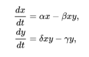

El modelo depredador-presa de Lotka Volterra es un sistema formado por un par de ecuaciones diferenciales no lineales de primer orden que modelan el crecimiento de dos poblaciones que interactúan (depredador y presa). Este sistema fue propuesto por primera vez por Alfred James Lotka en 1925. Un año después, en 1926, fue propuesto por Vito Volterra, se considera que las ecuaciones se propusieron de forma independiente.
